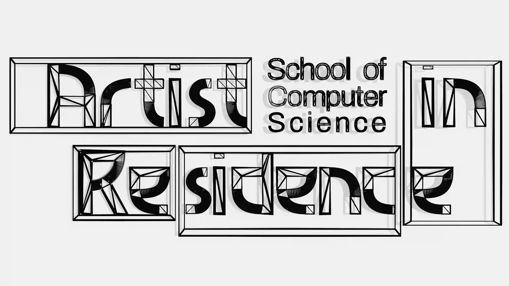

conditions in sydney: …
Write Futures Lab
We study how technology is changing how we write and how we think, and imagine ("write") new ways of building or deconstructing technology in our writing and thinking lives.
Writing is often a mode of thinking. By forcing our amorphous thoughts into words on the page, we clarify and revise our thoughts; they are changed by the act of writing. Because of this, writing---which is often considered a technology unto itself---changed the way we think. At the Write Futures Lab, we study how new technologies like large language models (LLMs) and artificial intelligence (AI) are once again changing our thought processes by changing how we write.
We also critique current technological practices, like ethical problems with how language models are made and distributed, and envision positive futures, like new ways of making language models that align with our values.
Our work loosely fits in the following topics:
- provide evidence on the impacts of using AI in the writing process
- design new ways to use AI that align with writerly values
- build and evaluate community language models
The Write Futures Lab is led by Katy Gero and housed in the School of Computer Science at the University of Sydney.
members
collaborators
projects
How is AI changing the way we write? How should it be used in the classroom? We have a number of studies investigating these questions, including how AI support at different stages of the writing process impacts our feeling of ownership and how AI policies for writing assessments change how students use AI.
Little Free Language Models imagines what a language model built by and for writers would look like. In 2025 we ran a series of workshops with over 200 writers to come up with new metaphors for language model creation and governance. We are now working on building our first set of models as a proof-of-concept of what a larger community model might look like.
publications

Read the full call on the artist in residence page. Apply through this form.
A four-month artist residency, February to May 2027, hosted by the School of Computer Science at the University of Sydney.
Artists are the best people to interrogate new technologies: their capabilities, their impacts, their assumptions and implicit beliefs. The Artist in Residence program at the School of Computer Science is intended to support artists working on projects that involve serious consideration of computation and its related subjects. By providing residents with access to the people and facilities in the School of Computer Science at the University of Sydney, as well as the time, space, and funding to pursue their work, we hope to support residents in developing world-class technology-informed art.
PhD & MPhil
If you are interested in doing a PhD at the lab, please fill out this form. I typically review applications in June and September, but the form has the most up-to-date information.
Dalyell Scholars, Honours, & Research Pathway
If you are a student at the University of Sydney and interested in a research project, I supervise a number of Dalyell Scholar, Honours, and Master's Research Pathway each year, depending on my supervision capacity. Please email me with the subject line "Write Futures [Honours / Dalyell / etc.] Interest", attach a transcript and resume, and let me know what kind of research or research topics you are interested in. I can work with you to develop a project that is a good fit for you and the lab.
Post-docs
I do not currently have any funding for post-docs, but if you have your own funding, I am happy to discuss! Email me however you like. ;)
Please note that I receive quite a bit of email, so I cannot always respond right away and sometimes my responses are quite brief. Please know that I do my best to respond in a timely manner. If you email me about a PhD or MPhil position but do not fill out the form above, I will ignore the email, and you do not have to email me, I will review your application in the form. For others, read the information above, and then email me: katy.gero@sydney.edu.au
The title font is Megrim by Daniel Johnson.
The avatars on the 'people' page are from Boring Avatars.
Weather conditions in Sydney are pulled from the Open-Meteo free weather API; conditions (and time) are updated every 15 minutes. Moon info (if it's up, what phase) use SunCalc, "a tiny BSD-licensed JavaScript library for calculating sun position" and more.